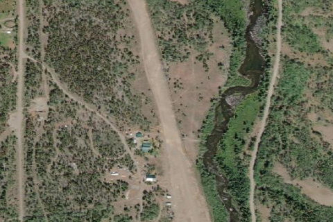

Twin Lakes, BC

Aerial imagery source: Esri, Vantor, Earthstar Geographics, and the GIS User Community
View original source (Shortfield) →
| Coordinates | 51.564534, -123.824673 |
|---|
Notes
[shortfield] Location Overview Twin Lakes CAG4 sits on the narrow strip of land between Elkin Lake to the north and Vedan Lake to the south — two similarly shaped lakes occupying the same north-south valley in the Cariboo region of BC's Chilcotin Plateau. The coordinates place it at approximately 51.56°N, 123.82°W, deep in the Nemaiah Valley. The Nemaiah Valley remains one of the untouched mountain valley gems of the Chilcotin, only about a one-hour flight north of Vancouver. The broader Chilcotin region is known for its vast expanses of rolling valleys and remarkable mountains, encompassing rolling grasslands, spruce-pine forests, wetland meadows, and dramatic terrain surrounding the high Chilcotin Plateau. Camping & Recreation No formal camping facilities exist at the airstrip itself. However, the surrounding area offers exceptional wilderness recreation. The region sits within the world-famous Wild Horses of BC's Brittany Triangle, and Spanish horses have been known to graze nearby — wild horses are often spotted in and around the valley. The adjacent Elkin Creek Guest Ranch, a short distance to the south on Vedan Lake, offers guests horseback riding, kayaking, fly fishing, mountain biking, and hiking. The setting under Mount Tatlow and beside Vedan Lake makes it particularly well-suited for wildlife spotting and riding through unspoiled Chilcotin foothills. Notes & Warnings The runway at Twin Lakes CAG4 is approximately 3,600 feet of grass, aligned 14-32, at an elevation of 3,945 feet ASL. The high-elevation grass surface demands careful density altitude calculations, especially in warm summer months. The strip does not appear in Nav Canada's published supplements and its ownership is uncertain — it is likely private, associated with whoever occupies the adjacent property near the red hangar. Pilots should treat it as a private strip and seek permission before landing. The narrow valley orientation running north-south constrains approach paths, and the area is recommended for light bush-grade aircraft, whether on wheels or floats. There are no services, fuel, or communications on site. History The Twin Lakes area is situated within the historically rich Chilcotin territory of the Tsilhqot'in (Tsilqot'in) Nation. The broader Chilcotin region saw well over a century of growing settlement by European ranchers and cattlemen, who were drawn by the vast open grasslands, while the First Nations inhabitants were increasingly pushed aside — a wrong that began to be addressed only recently when a landmark Supreme Court of Canada decision granted the Tsilhqot'in Nation aboriginal land title over a substantial portion of the region, including the Nemaiah Valley. The airstrip at Twin Lakes developed as part of the network of private backcountry strips that grew alongside the guest ranch and wilderness lodge economy in the Chilcotin from the mid-20th century onward. Three grass strips exist within sight of one another in this cluster — Twin Lakes CAG4, Chaunigan Lake Lodge, and Elkin Creek Guest Ranch — reflecting the area's reliance on light aircraft for access to this otherwise road-remote wilderness.